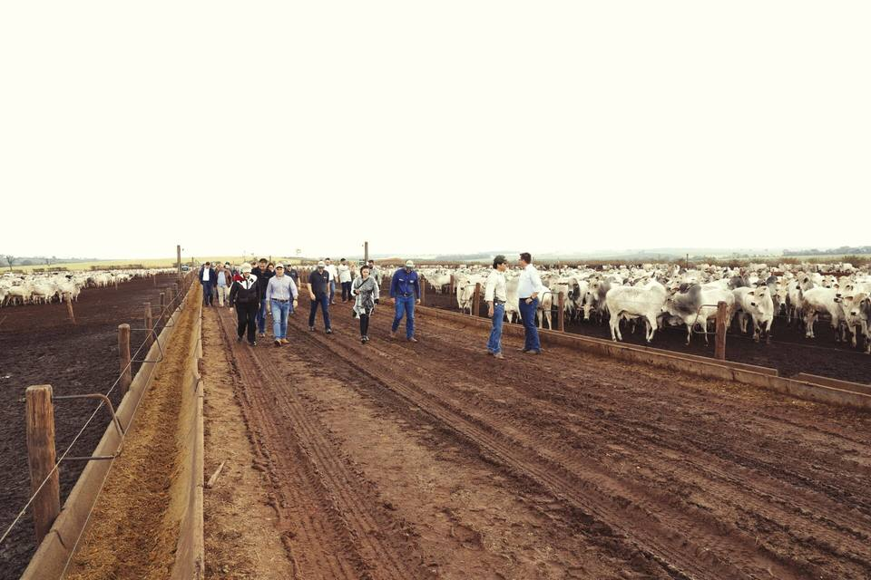

Três gerações, uma missão.
Da laranja de Oswaldo Perrone ao confinamento de referência nacional: cada geração entregou a fazenda melhor do que recebeu. A marca CMA carrega essa promessa.
90 anos de raiz, futuro em movimento.
Navegue pela linha do tempo: clique nos anos, use as setas do teclado ou deixe a história correr sozinha.

O curral do avô ao lado do brete novo.
Na CMA, a história não é decoração. O curral de madeira dos anos 70 segue recebendo gado ao lado do tronco hidráulico moderno: a imagem-síntese de uma marca que honra o que aprendeu e adota o que comprovadamente funciona: do floculador ao ERP.
É a resposta à pergunta que todo pecuarista faz antes de confiar o próprio rebanho: "por que eu confio em você?" Porque há três gerações a resposta está no cocho, na balança e na palavra.
Seu gado no confinamento pioneiro em certificação do Brasil.
Isenção total de ICMS em SP, trava de preço na B3 e o relatório do seu lote em uma página. Simule sua parceria.